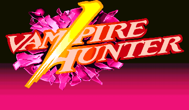
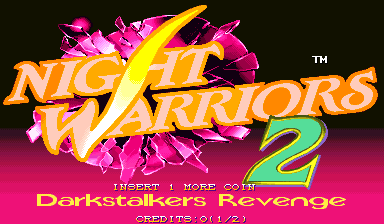
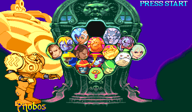
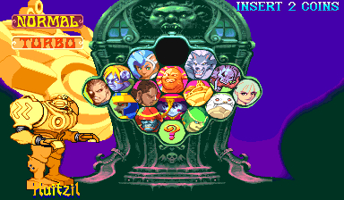
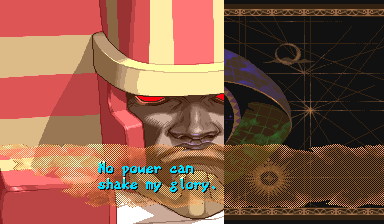
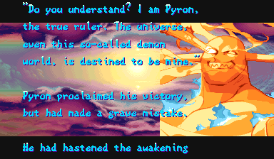

Night Warriors 2
Vampire Hunter 2, translated to English
Screenshots
Original

Patched

Original

Patched



About this patch
Vampire Hunter 2 is a 1997 Capcom fighter that only ever reached Japanese arcades. Its predecessor came to the West as Night Warriors: Darkstalkers' Revenge, but this sequel never made the trip. The patch translates the whole game into English and gives it the Western name it should have had, Night Warriors 2.
That title screen isn't a fan mock-up. An unused Western title was already sitting inside the original game, and the patch finishes it and switches it on. Nothing about the gameplay changes.
Where Capcom's own English wording exists in the Western Darkstalkers games, the patch reuses it, so the writing matches the official localization. Everything else gets a fresh translation, checked in the actual game: the victory taunts, the boss exchanges, and every character's ending.
What's changed
- Arcade-native Night Warriors 2 title screen, built from the ROM's unused Western title path
- USA region presentation (warning screen and region byte)
- Western character names on character select, route map labels, and the fight HUD: Zabel → L.Raptor, Gallon → J.Talbain, Lei-Lei → Hsien-Ko, Phobos → Huitzil, Aulbath → Rikuo
- English route/stage titles
- All 225 post-fight quotes in English
- All boss dialog and every character ending translated
- English staff roll under the Night Warriors 2 name
Downloads
You need your own dump of Vampire Hunter 2: Darkstalkers Revenge (Japan 970929) as the MAME
set vhunt2.zip. Each zip includes a readme.txt with
full instructions.
How to apply (ROM patch)
unzip vhunt2-english-rc1-ips.zip -d vhunt2-patch
cd vhunt2-patch
python3 apply.py /path/to/vhunt2.zipThis checks every file against the checksums below, then writes
vhunt2_patched.zip. Rename it to vhunt2.zip
and put it ahead of the stock set in your MAME rompath. Alternatively, apply each
file in ips/ with any IPS patcher (Flips, Lunar IPS, …) to the ROM file
of the same name and re-zip the set yourself.
MAME reports checksum warnings for the patched program ROMs when loading. That is expected, and the game runs normally.
MiSTer
Copy Night Warriors 2 (English Translation).mra from the MRA download anywhere under _Arcade/ on your MiSTer, and have the stock, unmodified romset at
games/mame/vhunt2.zip (split MAME sets also need qsound.zip).
You need Jotego's jtcps2 core, which the standard MiSTer downloader
(update_all) installs automatically.
The MRA references your original romset and applies the translation in memory
while the game loads, so nothing on your SD card is modified. The translation keeps
its own settings and saves under the setname nwarr2en.
HBMAME
This translation is an official HBMAME
set, vhunt2s01
(merged upstream). HBMAME releases carry it going
forward, so if you use full HBMAME romset collections you may already have it.
Look for vhunt2s01 in the game list.
To build the set from your own dump, run the IPS download's apply script with
--hbmame:
python3 apply.py /path/to/vhunt2.zip --hbmameThis writes vhunt2s01.zip; put it in HBMAME's
roms/ folder next to your stock vhunt2.zip. Unlike the
MAME route above, the set loads with no checksum warnings, because HBMAME's set definition
carries the patched checksums.
Changed ROMs
| File | Size | Original CRC32 | Patched CRC32 |
|---|---|---|---|
| vh2j.03a | 512 KB | 9ae8f186 | 1ce8d926 |
| vh2j.04a | 512 KB | e2fabf53 | 6b232eae |
| vh2j.08 | 512 KB | ac873dff | be9d8a6c |
Notes
- MAME reports checksum warnings for the three patched program ROMs. This is expected; the game boots and plays normally.
- Where a line matches the Western Night Warriors or Vampire Savior arcade sets, the patch reuses Capcom's own English, but only where the Japanese text says the same thing.